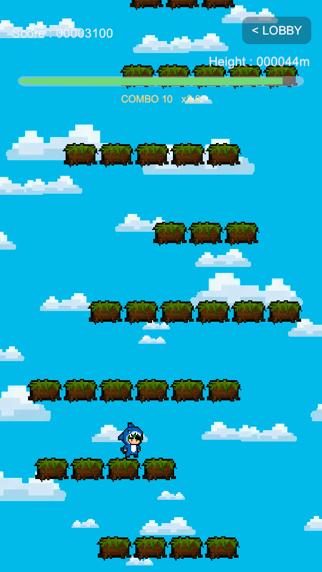
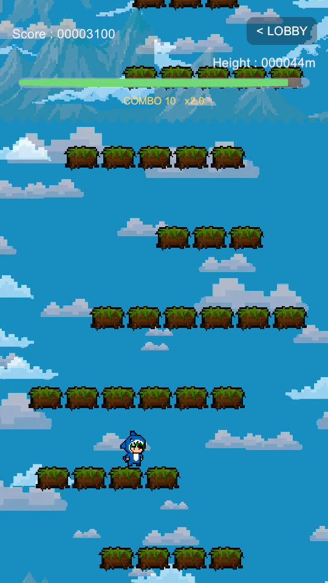
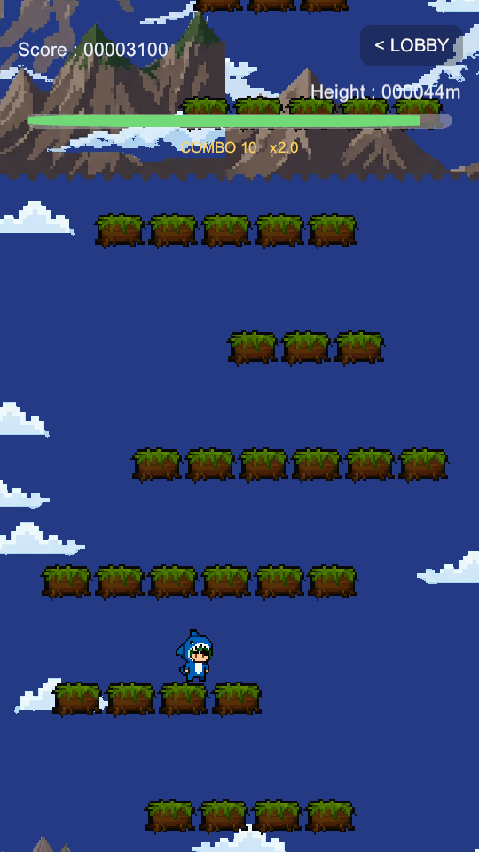
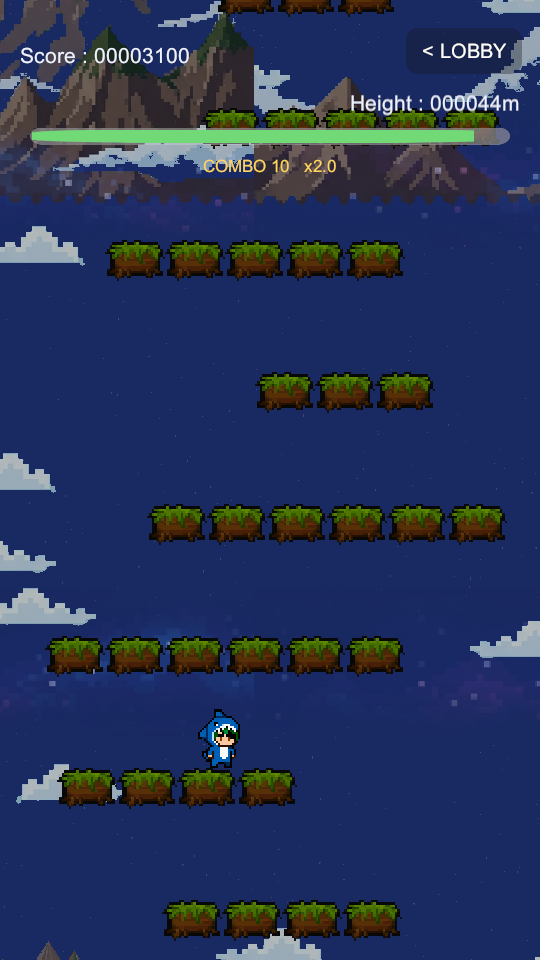
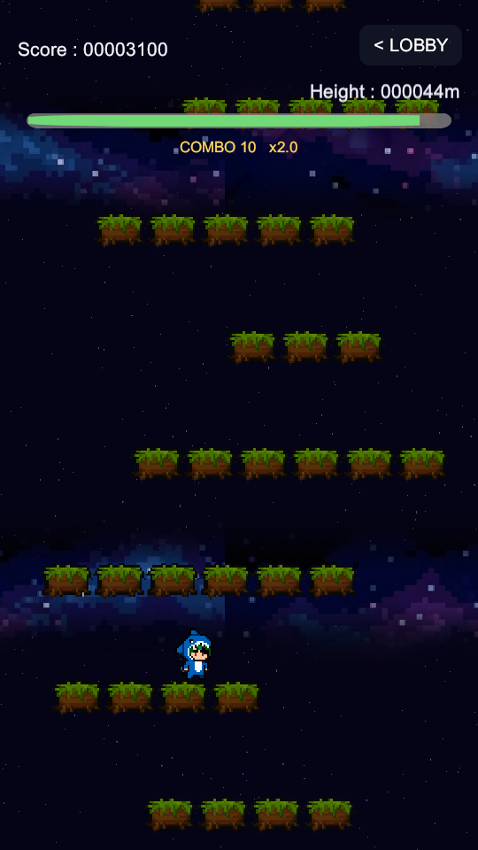

<title>높이별 배경 적용 보고서</title>
<meta charset="utf-8">
<style>
  :root{
    --bg:#f7f6f3; --card:#fff; --ink:#1c1b19; --muted:#6b6862;
    --line:#e3e0da; --accent:#c2410c; --ok:#15803d; --warn:#b45309;
  }
  @media (prefers-color-scheme:dark){:root:not([data-theme="light"]){
    --bg:#16151a; --card:#1f1e24; --ink:#eceaf0; --muted:#a3a0ab;
    --line:#33313b; --accent:#fb923c; --ok:#4ade80; --warn:#fbbf24;
  }}
  :root[data-theme="dark"]{
    --bg:#16151a; --card:#1f1e24; --ink:#eceaf0; --muted:#a3a0ab;
    --line:#33313b; --accent:#fb923c; --ok:#4ade80; --warn:#fbbf24;
  }
  body{background:var(--bg);color:var(--ink);font:16px/1.65 "Malgun Gothic","Segoe UI",system-ui,sans-serif;
       margin:0;padding:40px 20px 80px}
  main{max-width:880px;margin:0 auto}
  h1{font-size:28px;line-height:1.3;margin:0 0 6px;letter-spacing:-.02em}
  .sub{color:var(--muted);margin:0 0 36px;font-size:14px}
  h2{font-size:19px;margin:44px 0 14px;padding-bottom:8px;border-bottom:2px solid var(--line)}
  h3{font-size:15px;margin:26px 0 8px;color:var(--accent)}
  section{background:var(--card);border:1px solid var(--line);border-radius:12px;padding:4px 24px 24px;margin-bottom:8px}
  .tw{overflow-x:auto;margin:14px 0}
  table{border-collapse:collapse;width:100%;font-size:14px;min-width:460px}
  th,td{padding:7px 10px;text-align:left;border-bottom:1px solid var(--line);vertical-align:top}
  th{font-weight:600;color:var(--muted);font-size:12.5px;text-transform:uppercase;letter-spacing:.04em}
  td.n{text-align:right;font-variant-numeric:tabular-nums}
  tr:last-child td{border-bottom:none}
  code{background:var(--bg);border:1px solid var(--line);border-radius:4px;padding:1px 5px;font-size:13px;
       font-family:Consolas,"Cascadia Mono",monospace}
  ul{padding-left:20px} li{margin:6px 0}
  ol{padding-left:22px} ol li{margin:8px 0}
  .tag{display:inline-block;font-size:12px;padding:2px 9px;border-radius:99px;border:1px solid currentColor;
       font-weight:600;vertical-align:middle}
  .ok{color:var(--ok)} .warn{color:var(--warn)} .bad{color:var(--accent)}
  .note{border-left:3px solid var(--warn);background:var(--bg);padding:12px 16px;border-radius:0 8px 8px 0;margin:16px 0}
  .note p{margin:6px 0}
  .lead{font-size:17px}
  .flow{background:var(--bg);border:1px solid var(--line);border-radius:8px;padding:14px 16px;margin:16px 0;
        font-family:Consolas,"Cascadia Mono",monospace;font-size:13px;line-height:1.7;overflow-x:auto;white-space:pre}
  figure{margin:0}
  .shots{display:flex;gap:14px;flex-wrap:wrap;margin:18px 0}
  .shot{flex:1 1 150px;min-width:130px;max-width:190px}
  .shot img{width:100%;display:block;border:1px solid var(--line);border-radius:8px;background:var(--bg);
            image-rendering:pixelated}
  .shot figcaption{font-size:12.5px;color:var(--muted);margin-top:8px;text-align:center;line-height:1.5}
</style>

<main>
<h1>높이별 배경 적용 보고서</h1>
<p class="sub">심심할 때 하는 게임 · 점프점프 · 2026-09-07 · 배치 모드 검증 완료</p>

<section>
<h2>1. 한 줄 요약</h2>
<p class="lead">배경이 <strong>높이에 따라 평야 &rarr; 산 &rarr; 우주로 서서히 갈아탑니다.</strong>
0m 평야 / 200m 산 / 500m 우주이고, 경계 앞 30m 에 걸쳐 겹쳐 넘어가서 딱 끊기지 않습니다.
컴파일 오류 0건, 자동 플레이테스트에서 <strong>봇이 실제로 200m 전환을 지나갔습니다.</strong></p>

<div class="flow">        0m ────────── 200m ────────── 500m ──────────>
   BG_01 평야      BG_02 산        BG_03 우주 (계속)
        └─ 170~200m 겹침 ─┘  └─ 470~500m 겹침 ─┘</div>
</section>

<section>
<h2>2. 실제 화면 <span class="tag ok">배치 모드 캡처</span></h2>
<p>플레이 모드에 들어가지 않고 뽑은 실제 게임 화면입니다.
<code>JumpJump\JumpJump_Preview\</code> 에 있습니다.</p>

<div class="shots">
<figure class="shot">
  <figcaption><strong>10 m</strong><br>평야 (겹침 0%)</figcaption></figure>
<figure class="shot">
  <figcaption><strong>185 m</strong><br>산이 비쳐 들어옴 (겹침 50%)</figcaption></figure>
<figure class="shot">
  <figcaption><strong>210 m</strong><br>산 (겹침 0%)</figcaption></figure>
<figure class="shot">
  <figcaption><strong>485 m</strong><br>우주가 비쳐 들어옴 (겹침 50%)</figcaption></figure>
<figure class="shot">
  <figcaption><strong>510 m</strong><br>우주 (겹침 0%)</figcaption></figure>
</div>

<p><span class="tag" style="color:var(--muted)">참고</span> 위 5장은 <strong>배경만 높이를 바꿔 넣고 찍은 것</strong>입니다.
봇이 500m 까지 실제로 올라가려면 오래 걸려서, 발판과 캐릭터는 같은 자리에 두고 배경만 비교했습니다.
그래야 배경 차이가 한눈에 보입니다.</p>
</section>

<section>
<h2>3. 검증 결과</h2>
<div class="tw"><table>
<tr><th>검증</th><th>명령</th><th>결과</th></tr>
<tr><td>컴파일 + 씬 3장 생성</td><td><code>ShellSceneBuilder.BuildAll</code></td>
    <td class="ok">오류 0건 / 타이틀·로비·게임 씬 정상</td></tr>
<tr><td>배경 목록 인식</td><td>같은 명령 안에서</td>
    <td class="ok">BG_01 0m / BG_02 200m / BG_03 500m 자동 등록</td></tr>
<tr><td>화면 캡처</td><td><code>JumpJumpPreview.Capture</code></td>
    <td class="ok">8장 (기존 3장 + 배경 구간 5장)</td></tr>
<tr><td>자동 플레이테스트</td><td><code>JumpJumpPlaytest.Run</code></td>
    <td class="ok"><strong>봇 143칸 ≈ 315m / 41,000점</strong> — 200m 전환을 실제로 통과, 오류 없음</td></tr>
</table></div>
<p>이전 세션 기록은 봇 138칸 / 39,500점이었으니 <strong>성능 저하 없이 그대로입니다.</strong></p>
</section>

<section>
<h2>4. 고친 것</h2>

<h3>그림</h3>
<div class="tw"><table>
<tr><th>무엇</th><th>내용</th></tr>
<tr><td><code>Art/Background/BG_01~03.png</code></td>
    <td><strong>896&times;1400 세로 타일 3장으로 교체.</strong> 위끝과 아래끝이 이어져서 무한 반복해도 이음매가 안 보입니다</td></tr>
<tr><td><code>BG_원본\</code> <span class="tag ok">새 폴더</span></td>
    <td>원본 가로형 3장과 옛 <code>BG.jpeg</code> 를 <strong>전부 백업</strong>. 지운 것은 없습니다</td></tr>
</table></div>

<h3>코드</h3>
<div class="tw"><table>
<tr><th>파일</th><th>내용</th></tr>
<tr><td><code>GameConfig.cs</code></td>
    <td><code>BackdropBand</code>(높이 + 그림) 목록과 <code>backdropBlendMeters</code> 추가.
        구간을 고르는 <code>BackdropIndexForMeters</code> / 겹침 비율 <code>BackdropBlend</code></td></tr>
<tr><td><code>BackdropTiler.cs</code></td>
    <td>배경을 <strong>두 겹(Current / Next)</strong> 으로 깔고 위 겹의 투명도를 올려 갈아탑니다.
        두 겹 모두 "타일 높이의 정수배"만 움직여 보이는 그림을 유지합니다</td></tr>
<tr><td><code>GameManager.cs</code></td>
    <td>매 프레임 <code>backdrop.Tick(현재 높이)</code>. 최고 기록(<code>HeightMeters</code>)이 아니라
        <strong>지금 높이</strong>를 씁니다 &mdash; 떨어지면 배경도 같이 내려와야 하니까요</td></tr>
<tr><td><code>JumpJumpArtSetup.cs</code></td>
    <td>배경을 <code>BG.jpeg</code> 고정 대신 <strong>폴더 스캔</strong>으로. 캐릭터 5종과 같은 방식입니다</td></tr>
<tr><td><code>JumpJumpSceneBuilder.cs</code></td>
    <td>배경 두 겹을 만들어 연결. <code>SyncBackdropBands()</code> 가 폴더의 그림을
        이름 순서대로 <code>GameConfig</code> 에 채웁니다</td></tr>
<tr><td><code>JumpJumpPreview.cs</code></td>
    <td>구간별 배경 캡처 추가 (위 5장)</td></tr>
</table></div>
</section>

<section>
<h2>5. 앞으로 이렇게 바꾸시면 됩니다</h2>

<h3>전환 높이를 바꾸고 싶을 때</h3>
<p><strong>코드가 아니라 <code>Assets/JumpJump/GameConfig.asset</code> 인스펙터</strong>입니다.</p>
<ul>
<li><code>Backdrop Bands</code> &rarr; 각 줄의 <code>From Meters</code> = 그 배경이 시작되는 높이</li>
<li><code>Backdrop Blend Meters</code> = 몇 m 에 걸쳐 겹쳐 넘어갈지 (기본 30)</li>
</ul>

<h3>배경을 한 장 더 추가하고 싶을 때 (예: 1000m 심우주)</h3>
<ol>
<li><code>Art/Background/</code> 에 <code>BG_04.png</code> 를 넣습니다 (896&times;1400, 위끝=아래끝)</li>
<li><strong>Tools &gt; Arcade &gt; Build All Scenes</strong> 실행 &mdash; 폴더를 훑어서 자동으로 목록에 붙습니다</li>
<li>인스펙터에서 전환 높이를 원하는 값으로 고칩니다</li>
</ol>
<div class="note">
<p><strong>주의:</strong> 그림 <strong>장수가 바뀌면</strong> 전환 높이가 기본값(0 / 200 / 500 / 1000 ...)으로
다시 잡힙니다. 장수가 그대로면 손으로 고친 높이는 그대로 유지됩니다.</p>
</div>

<h3>그림을 더 좋은 것으로 바꾸고 싶을 때</h3>
<p>세로형(896&times;1400, 위끝 색 = 아래끝 색)으로 뽑아서 주시면
<code>BG_시험\배경타일_만들기.py</code> 로 이음매를 맞춰 드립니다.
조건 전문은 <code>배경이미지_준비가이드.html</code>.</p>
</section>

<section>
<h2>6. 남은 아쉬움 <span class="tag warn">솔직하게</span></h2>
<ol>
<li><strong>평야의 구름이 사실상 한 종류입니다.</strong> 원본에서 잘리지 않은 구름이 1개뿐이라
    반전·확대·축소로 26개를 만들어 뿌린 것입니다. <strong>구름 3~4종만 더 있으면 확 좋아집니다.</strong></li>
<li><strong>산은 봉우리 몇 개가 200~500m 내내 반복됩니다.</strong> 원본에 산이 그것뿐이라 어쩔 수 없었습니다.</li>
<li><strong>세 장의 하늘색 차이가 큽니다</strong>(하늘색 &rarr; 남색 &rarr; 검정).
    30m 에 걸쳐 넘기고 있지만 <strong>실제로 플레이하면서 전환이 급하게 느껴지는지 봐 주세요.</strong>
    급하면 <code>Backdrop Blend Meters</code> 를 60~100 으로 올리면 됩니다.</li>
</ol>
</section>

<section>
<h2>7. 정정 <span class="tag bad">제가 틀렸던 것</span></h2>
<p>작업 초반에 <strong>"<code>BG.jpeg</code> 가 지워져서 Build Game Scene 이 실패하는 상태"</strong> 라고
두 번 말씀드렸는데 <strong>사실이 아니었습니다.</strong> 파일은 그대로 있었고 빌드도 깨져 있지 않았습니다.
파일 목록을 잘못 읽은 제 실수입니다.</p>
<p>지금은 새 배경으로 대체하면서 <code>BG.jpeg</code> 를 <code>BG_원본\</code> 으로 옮겨 두었습니다.
<strong>실제 작업 내용에는 영향이 없습니다</strong> &mdash; 어차피 배경을 3장 체계로 바꾸는 작업이었으니까요.</p>
</section>

<section>
<h2>8. 다음</h2>
<ol>
<li><strong>직접 플레이해서 전환을 봐 주세요.</strong> Unity 에디터에서
    <strong>Tools &gt; Arcade &gt; Build All Scenes</strong> &rarr; <strong>Play</strong>.
    200m 까지 올라가야 첫 전환이 보입니다.</li>
<li>폰에서 보시려면 APK 를 다시 구워야 합니다
    (<strong>Tools &gt; JumpJump &gt; Build Android APK</strong>, IL2CPP 라 10분 이상).
    <strong>작업 폴더의 <code>JumpJump.apk</code> 는 2026-09-06 것이라 타이틀·로비도 배경도 없습니다.</strong></li>
<li>구름 종류를 늘리거나 그림을 새로 뽑으시면 알려 주세요. 바로 반영합니다.</li>
</ol>
</section>

</main>
